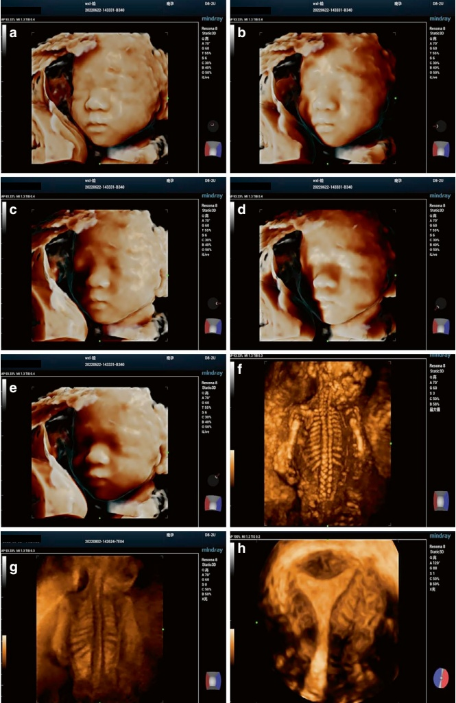
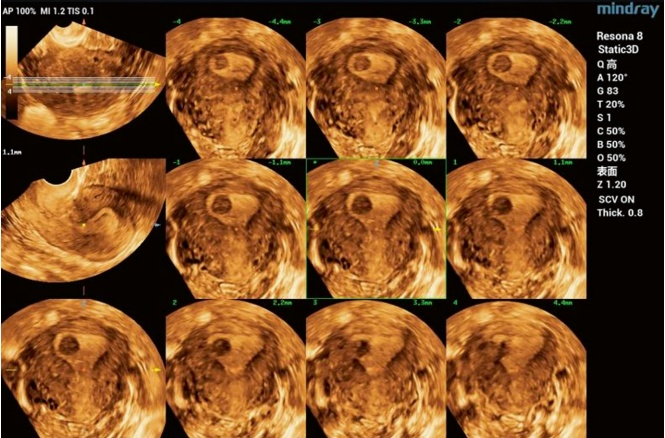
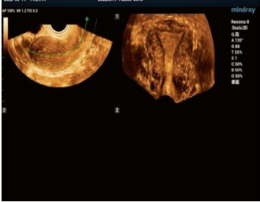
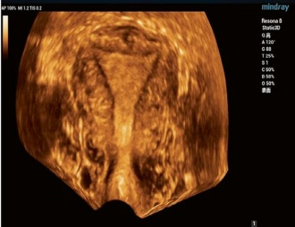
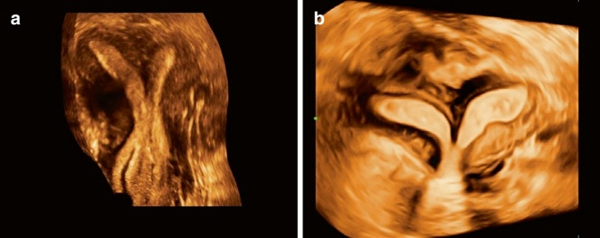

2.2.3 Principles and Applications of 3D Ultrasound Imaging
3D ultrasound technology addresses the limited spatial visualization of 2D ultrasound, making it an important complement to traditional imaging techniques.
1. Principles of 3D Imaging
3D ultrasound builds upon 2D ultrasound imaging, meaning high-quality 3D images can only be obtained if the 2D images are of sufficient quality. 3D imaging techniques are divided into static 3D imaging and real-time 3D imaging. In static 3D ultrasound, the probe is placed at a fixed position during scanning and cannot be moved, resulting in a series of static images. In contrast, real-time 3D imaging extends static 3D by incorporating a time variable, enabling continuous volume acquisition and simultaneous reconstruction. This method allows both the target of observation and the probe to move.
Typically, 3D ultrasound imaging involves the following steps: data acquisition, 3D reconstruction, image display, and 3D image slicing/analysis.
(a) Data acquisition
Data acquisition refers to the process by which a diagnostic ultrasound system collects a series of 2D images from multiple locations within an area of interest in the body. Data acquisition methods include mechanical posi-
tioning scanning, free-hand scanning, 2D array transducer scanning, and matrix array transducer scanning (the approach most commonly used by ultrasound systems today) [2].
Since 3D ultrasound imaging relies on reconstructing 2D images, its temporal and spatial resolution is typically lower than that of conventional 2D ultrasound. Additionally, the speed of 3D ultrasound imaging remains a bottleneck that limits the development of real-time 3D imaging. However, the quality of real-time 3D ultrasound images involves a trade-off between the fan angle of the scan and the number of frame captured per second. Optimizing image quality for a specific clinical application requires balancing these two parameters.
(b) 3D reconstruction
3D reconstruction methods include stereo-geometric construction (GCS) modeling, surface contour extraction, and voxel modeling. Volume reconstruction is most commonly used and typically realized through voxel-based algorithms. Each voxel is projected into its corresponding 3D position within the volume to create a voxel-based volume model in this approach.
(c) 3D image display and the cutting and analyzing of images
Among the various image display modes in 3D ultrasound, the most suitable mode should be selected based on the target organ, site, and nature of the lesion. Common display modes include 3D rendering mode, three-plane mode, Tomographic Ultrasound Imaging (TUI), OmniView technology, and volume contrast imaging (VCI).
Stereoscopic rendering modes are categorized into surface, perspective, and HDlive modes. By adjusting the mixing ratio of the two modes, different rendering effects can be achieved, such as surface mode, maximum mode, X-ray mode, minimum mode, and HDlive mode. Different observational results can be obtained using various modes for the same lesion site (Fig. 2.14). For example, surface mode is commonly used to visualize the endometrium, early pregnancy fetus, and tubal contrast imaging; maximal mode is typically employed to visualize the fetal skeleton; X-ray mode is often used for viewing intracranial structures of the fetus, intrauterine devices, and the endometrium; and HDlive mode can provide more detailed and three-dimensional images depending on the direction of the light source.
TUI displays volumetric data in multiple parallel planes, resembling the imaging techniques used in computerized tomography (CT) or magnetic resonance imaging (MRI). The parameters of the image planes, such as the number of layers, layer spacing, position, and tilt, can be adjusted to suit the target area and the specific purpose of the observation (Fig. 2.15).




The OmniView mode offers curved sectioning that allows for customized sectioning, adapting to the shape of the area being observed. For example, when evaluating uterine malformations in a 3D coronal view, an anterior or posterior inclination of the uterus can cause the endometrium to not align in the same plane, hindering the complete visualization of all relevant information (Fig. 2.16). In contrast, the free-cutting feature allows imaging that follows the direction of the endometrium, providing a full coronal view of the entire uterus.
